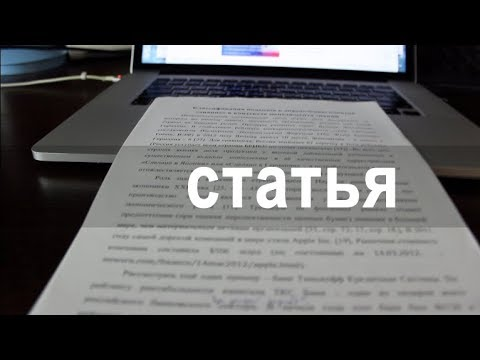

Статья́ — это жанр журналистики, в котором автор ставит задачу проанализировать общественные ситуации, процессы, явления, прежде всего с точки зрения закономерностей, лежащих в их основе. Такому жанру как статья присуща ширина практических обобщений, глубокий анализ фактов и явлений, четкая социальная направленность. В статье автор рассматривает отдельные ситуации как часть более широкого явления. Автор аргументированно пишет о своей точке зрения. В статье выражается развернутая обстоятельная аргументированная концепция автора или редакции по поводу актуальной социологической проблемы. Также в статье журналист обязательно должен интерпретировать факты (это могут быть цифры, дополнительная информация, которая будет правильно расставлять акценты и ярко раскрывать суть вопроса). Отличительным аспектом статьи является её готовность. Если подготавливаемый материал так и не был опубликован (не вышел в тираж, не получил распространения), то такой труд относить к статье некорректно. Скорее всего данную работу можно назвать черновиком или заготовкой. Поэтому целью любой статьи является распространение содержащейся в ней информации.
Содержание
Виды статьи
В современной журналистике выделяют пять видов статей:
Передовая статья
Передовая статья выражает точку зрения редакции по самому актуальному вопросу в данный момент. Передовая статья помогает правильно ориентироваться в проблемах общественной жизни, реагирует на самые актуальные вопросы. Основные требования: актуальность темы, глубокое раскрытие и обоснование выдвигаемых задач, конкретность и лаконичность обобщений, выводов, аргументов.
Передовые статьи могут быть:
- общеполитическими — публикуются в связи с знаменательными датами, событиями;
- пропагандистскими — раскрывают перспективы созидания, осуществление тех или иных идей;
- оперативными — отражают наиболее актуальные на данный момент политические ихозяйственные задачи.
Научная статья
На примерах конкретных ситуаций дается научно-теоретическое объяснение текущих событий. В таких статьях анализируются теоретические аспекты экономики, политики, литературы и искусства.
Информационная статья
- Информационно-повествовательная — материал располагается в последовательности, которая, как правило, соответствует их временному или пространственному развитию, свершению.
- Информационно-описательная — публикуются либо в связке с информационно-повествовательной либо отдельно от неё. В статье данного вида, информация излагается таким образом, чтобы у читателя составилось представление о предмете описания в целом, а также о его составных частях, отдельных свойствах и признаках.
Общеисследовательская статья
К этой группе относятся публикации, в которых анализируются общезначимые, широкие вопросы. Например, автор такой статьи может вести речь о направлениях политического или экономического развития страны или рассуждать об уровне нравственности, существующем на сегодняшний день в обществе в целом, или о возможности союза церкви и государства, или о взаимоотношениях страны с зарубежными государствами, и т. п. Подобного рода публикации отличаются высоким уровнем обобщения, глобальностью мышления авторов. Цель общеисследовательской статьи заключается в изучении различных закономерностей, тенденций, перспектив развития современного общества. Общеисследовательская статья — жанр трудный в том смысле, что он требует не просто знания какой-то конкретной проблемы, но предполагает теоретическое объяснение её существования.